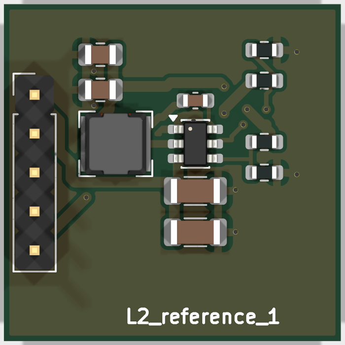
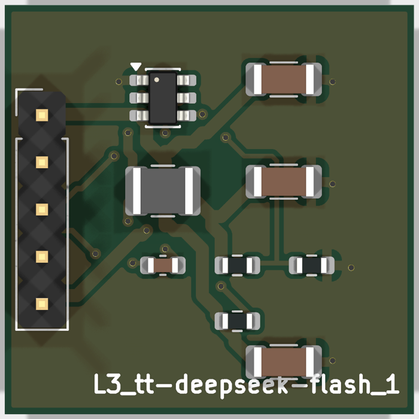

Know how the board will behave before you build it.
AI can now design circuit boards. But you only learn whether a design works after it is manufactured, soldered and measured — weeks later. Proofboard predicts the measurements first, then builds the board, measures it, and publishes how often the prediction was right.

Software has a compiler. Hardware has a two-week wait.
Language models got good at code because code can be checked in seconds. Circuit boards can't: today's checks only ask whether the rules are broken, not what the instruments will read.
In November 2026 Anthropic, working with Diode, named measurements on finished devices as the next step for Claude's electronics work. An open, independent version doesn't exist yet.


Same circuit, same rules, both pass. DeepSeek put the input capacitors 9.1 mm from the chip; the reference, 4.8 mm. Only a bench can say whether that matters.
Three parts, one loop.
We start with one well-understood circuit — a 3.3 V buck converter — and make each part rigorous before adding more.
Real parts, not adjectives
Every part is an exact catalogue part with datasheet parameters and a source page.
Design languagePredict, then commit
The Oracle predicts voltage, efficiency, ripple and temperature, and commits the prediction before the board is ordered.
The OracleMeasure, then score
A bench measures the real board in the same format and every hit and miss is published.
The benchHonest status, November 2026.
No board has been measured yet. This is what exists today.
I'm looking for people to build this with.
If any of this is you, write to me on LinkedIn — Ramil Murat. Code is available to partners on request.
- A mentor in power electronics
- Teams building or evaluating AI tools for PCB design
- Labs or schools with bench equipment to share